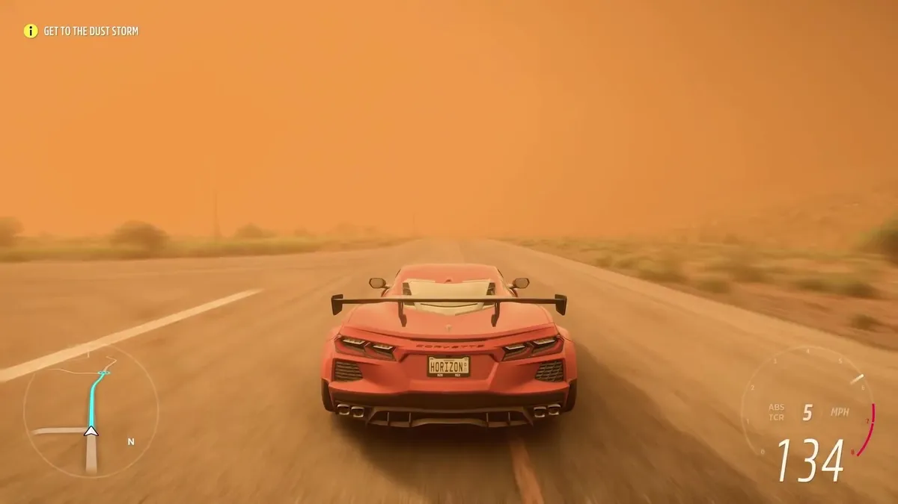

The game introduces a new weather system (local weather) in which players can visit one side of the map and can visibly see a storm. Because Mexico is such a vast nation with such a wide range of elevations, multiple climates would appear in the game at around the same time. The four seasons still exist but would affect the eleven unique biomes around the map. For example, in the dry season, dust storms will appear, while tropical storms occur throughout the fall storm season. Another detail is in the jungle, in which the environment would now react to the weather; an example of this is leaves flying everywhere. Forza Horizon 5 also introduces a brand new Horizon Arcade. This consists of a series of mini-multiplayer games strewn across the map. One of these mini-multiplayer games is called "Piñata pop" where the Horizon Festival's cargo plane drops piñatas. The goal is to pop as many piñatas as they can with the help of other players. It also introduces the "EventLab", a toolset in which players can create custom games, races, and more depending on their personal preference. A new feature called "Forza Link" was introduced. According to Brown, it is an AI assistant that tracks the current statuses of players, helping them to link with other players online and play together. Forza Link can also link players' GPS systems if they accept the invitation from another player. Accolades, new to the Forza Horizon series, allow players to collect points and prizes for completing certain tasks. Some vehicles can only be unlocked through the completion of the Accolades. There are over 1,800 accolades for the player to achieve.
